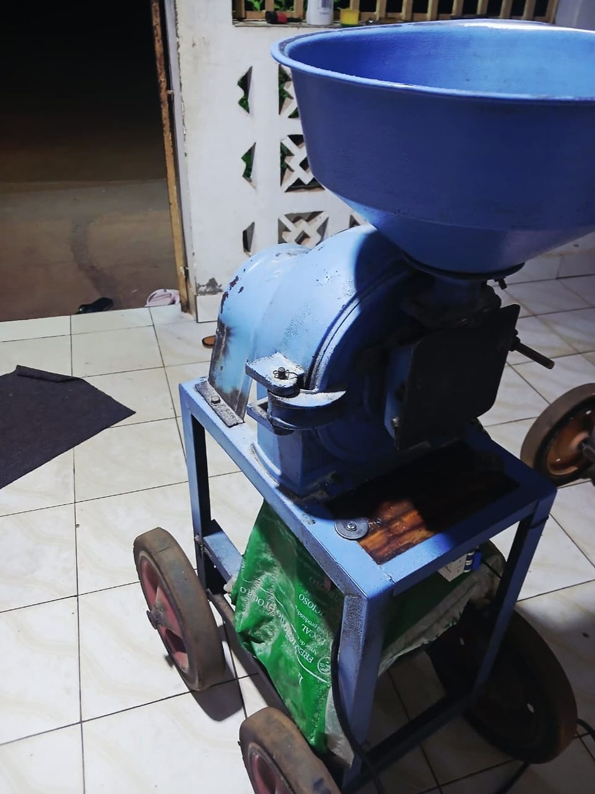
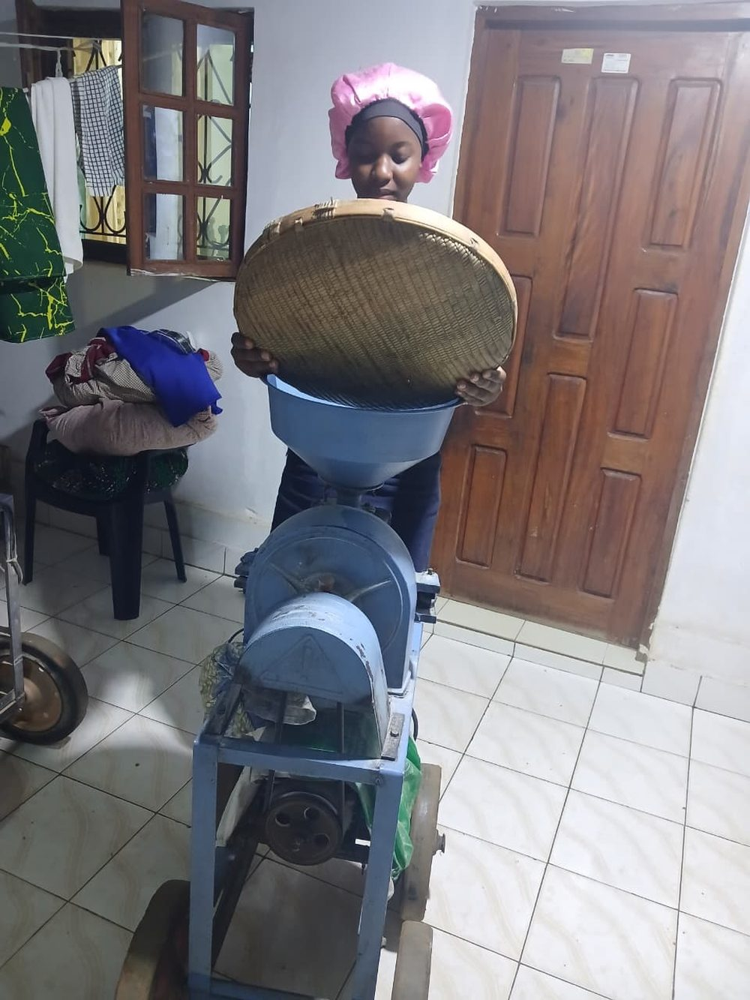
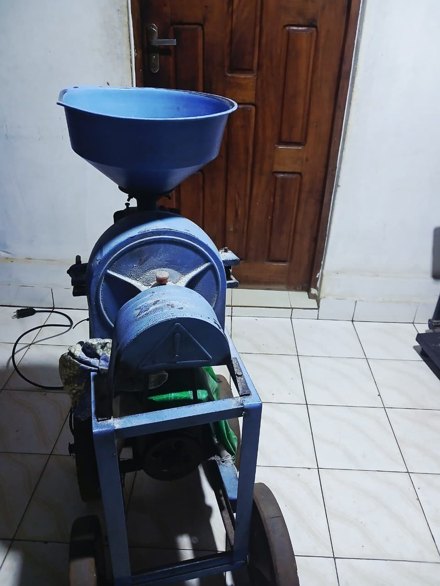

Registo fotográfico.
Fotografias da máquina e do seu funcionamento, registadas na Nhantumbo MG, no Bairro 1 de Inhamissa.



Fotografias da máquina e do seu funcionamento, registadas na Nhantumbo MG, no Bairro 1 de Inhamissa.


